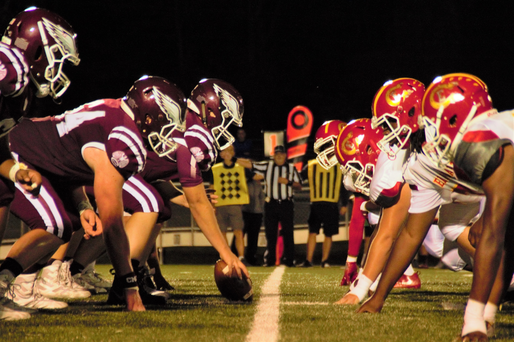

The Rams Didn't Actually Win
Super Bowl 56

The Rams didn't actually win Super Bowl 56. According
to an article by The New York Times, "The Rams touchdown
was started on a false start, therefore concluding that
The Rams
touchdown shouldn't be counted." (New York Times).
When the referees zoomed into the footage of the game, they
could see that Matthew Stafford, The Rams quarterback,
was 2.31
centimeters over the line. But it was too late, the game
had already ended, and The Rams had been declared champions.
The Bengals were very angry when they realized this, so
they
tweeted, "We have heard that the Ram's didn't score
the touchdown
... We are so angry that we are going to
shut down the team and
kick out all of our players." (The Bengals Twitter).